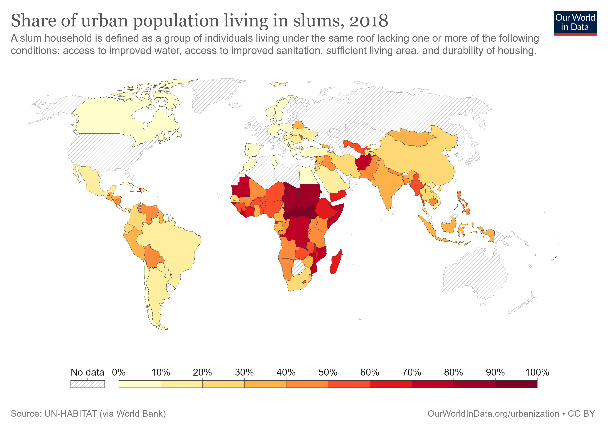

SDG 11, Indicator 1, "Urban population living in slums" is a measure of the percentage of the urban population living in slums or informal settlements.
Slums are typically characterized by poor living conditions, lack of basic services such as clean water and sanitation, and limited access to education and healthcare.
To address this issue, several solutions have been proposed, such as improving housing conditions, providing access to basic services, and promoting economic development in urban areas.
Many countries and companies have taken steps to address this issue in various parts of the world, such as Brazil's Favela-Bairro program, which aims to improve living conditions in slums through infrastructure and social development projects.
Similarly, the Indian government's Pradhan Mantri Awas Yojana aims to provide affordable housing to the urban poor.
Companies such as Coca-Cola have also launched social initiatives to improve access to clean water and sanitation in slum areas.
While progress has been made in reducing the percentage of the urban population living in slums, there is still a long way to go to achieve SDG 11 and ensure that all people have access to safe, affordable, and decent housing.
